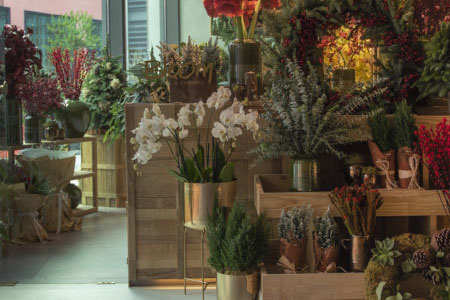

Conheça a nossa Empresa...
O que não falta é Flores!
Flores de diversos tipos.
Arte das Flores é um projecto criativo e empreendedor com ideias inovadoras sobre as flores, e o lugar delas na vida das pessoas.
Com uma vasta experiência nas áreas da decoração e do atendimento ao público, produzindo trabalhos únicos.
Os Tipos de Flores
- Rosas
- Margaridas
- Orquídeas
- Cravos
- e muitas outras opções.
As nossas lojas
|  |
 |
 |
Benfica |
Telheiras |
Cascais |
2025 - Portal das Flores - criado por Turma 25479